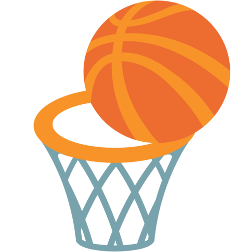
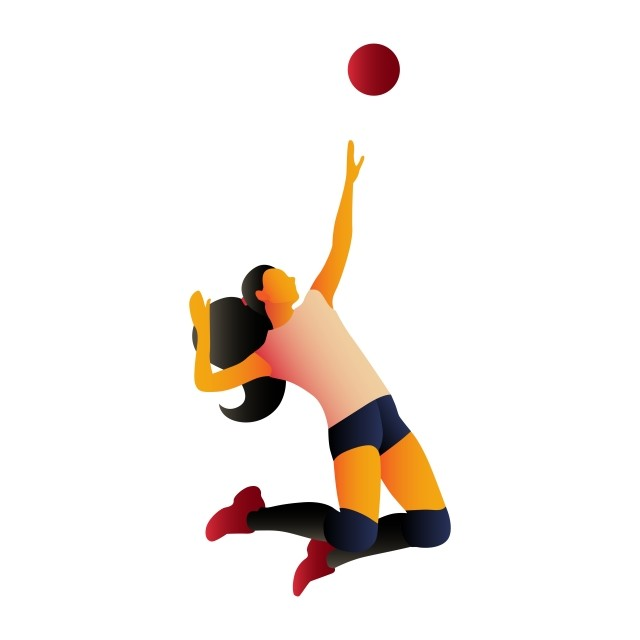

BasquetbolEn cuanto a la salud mental, favorece el desarrollo de agilidad y lógica al analizar aspectos tácticos, además de que mejora el estado de alerta para prevenir cualquier tipo de ataque físico. |
|  |
VoleibolMejora la coordinación y concentración. Ayuda a estar en forma, pues elimina la grasa excesiva. Mejorar la rapidez, la habilidad y los reflejos. |
|  |